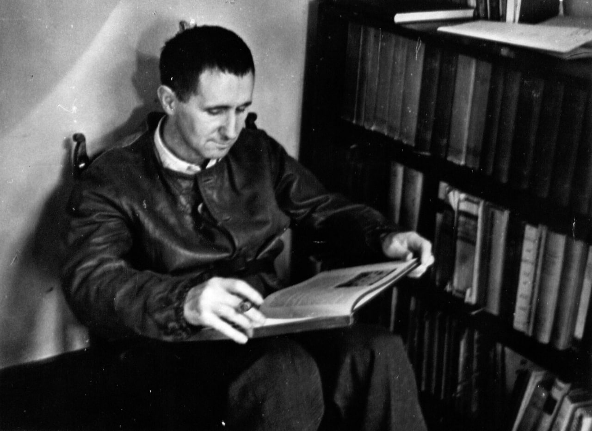

Bertolt Brecht, original name Eugen Berthold Friedrich Brecht, (born February 10, 1898, Augsburg, Germany - died August 14, 1956, East Berlin), German poet, playwright, and theatrical reformer whose epic theatre departed from the conventions of theatrical illusion and developed the drama as a social and ideological forum for leftist causes.

A brief history of Brecht's life:
- 1898 - Born in Augsburg, Bavaria where his father runs a paper mill.
- 1914 - His first poems are published.
- 1920 - He is named chief adviser on play selection at the Munich Kammerspiele.
- 1922 - He marries the opera singer and actress Marianne Zoff.
- 1926 - Man Equals Man premieres at Darmstadt and Düsseldorf.
- 1927 - Brecht divorces Marianne Zoff.
- 1929 - Brecht marries Helene Weigel.
- 1935 - Brecht is stripped of his German citizenship.
- 1944 - Brecht becomes a member of the Council for a Democratic Germany.
- 1955 - Brecht receives the Stalin Peace Prize.
- 1956 - Bertolt Brecht dies of a heart attack at the age of 58.

Quotes:
"No one will improve your lot if you do not yourself."
"The world of knowledge takes a crazy turn when teachers themselves are taught to learn."
"Do not fear death so much but rather the inadequate life."
"Sometimes it's more important to be human, than to have good taste."
"From the cradle to the coffin underwear comes first."
For further reading you can use this method Bertolt Brecht.